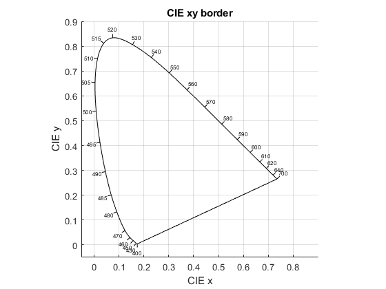
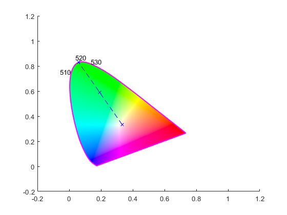

PlotCIExyBorder
Navigate to: Home | Alphabetic list | Grouped list | Source code: PlotCIExyBorder.m
Plot the CIE xy monochromatic border, with optional color fill and other options
Contents
Syntax
[ah, fh] = PlotCIExyBorder(varargin)
Input Arguments
- varargin: Optional name-value pairs:
| Name | Type | Value | Meaning |
| 'Figure' | handle to figure | empty (default) | valid figure handle to use for the plot. Current hold state will be restored. When empty, plot into new figure |
| 'Axes' | handle to axes | empty (default) | valid axes handle to use for the plot. Current hold state will be restored. Overrides 'Figure' |
| 'LineSpec' | string | 'k' (default) | valid LineSpec string, e.g. '--b' for dashed blue lines, see 'plot' documentation |
| 'PlotOptions' | cell array | empty (default) | cell array of valid plot options e.g. {'Color',[0.5 0.5 0.5],'LineWidth',2} |
| 'Ticks' | double vector | reasonable default | array of wavelength values where ticks and labels are plotted. Say ...,'Ticks',[],... to suppress ticks |
| 'TickFontSize' | scalar double | 6 (default) | Font size for ticks annotation, in points |
| 'ColorFill' | scalar logical | false (default) | When true, fill "shoe" with approximate colors |
Output Arguments
- ah: handle to axes where the border was plotted, to be used for further plotting of e.g. color coordinates
- fh: handle to figure where the border was plotted, to be used for further plotting.
Algorithm
Takes the monochromatic border values from the CIE standards and plots it, using the specified options.
See also
PlotCIEupvpBorder, CIE1931_Data
Usage Example
function ExamplePlotCIExyBorder() % bare minimal plot PlotCIExyBorder(); % more complex example fh = figure(); hold on; [ah, fh] = PlotCIExyBorder('Figure', fh, 'LineSpec','m','PlotOptions',{'LineWidth',1.5},'Ticks', [510 520 530], 'TickFontSize',10, 'ColorFill',true); green = ComputeSpectrumColorimetry(GaussSpectrum(450:600,520,30)); % find the point on the monochromatic border corresponding to lDom load('CIE1931_lam_x_y_z.mat','CIE1931XYZ'); xPure = LinInterpol(CIE1931XYZ.lam, CIE1931XYZ.xBorder, green.Ldom); yPure = LinInterpol(CIE1931XYZ.lam, CIE1931XYZ.yBorder, green.Ldom); % plot line from white point, to x/y of green, to border at green.lDom plot([1/3,green.XYZ.x,xPure], [1/3,green.XYZ.y,yPure],'--bx'); % result looks as intended, but things like "axis equal", "grid on" etc. are missing when figure or axes are % specified end 